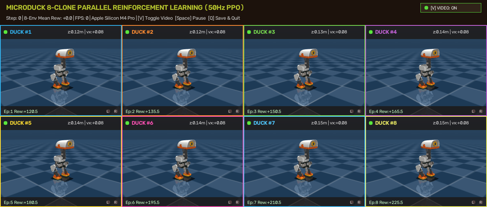
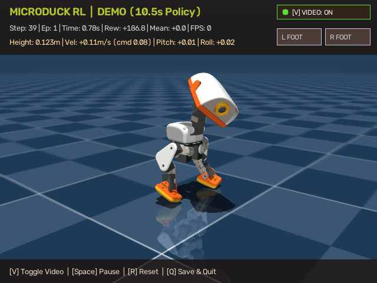
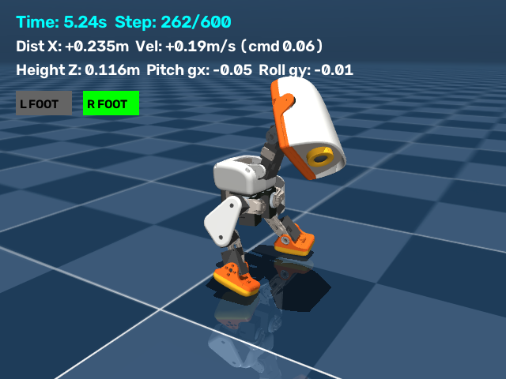

Microduck 雙足機器人強化學習訓練全解
深入剖析從數學公式到 Python 程式碼實作、仿生鴨子步態塑造、20秒長遠規劃突破，以及如何將此 Reinforcement Learning 架構無縫遷移至機械手臂 (Robotic Arm) 操控領域。
01 專案導讀與核心架構
Microduck 是由 Pollen Robotics 開源的 14 自由度 (DOF) 雙足行走小鴨機器人。與傳統採用 ZMP（零力矩點，Zero Moment Point）或複雜逆向運動學 (IK) 的控制算法不同，本專案採用無模型深度強化學習 (Model-Free Deep Reinforcement Learning, PPO)，直接讓機器人在 MuJoCo 物理引擎中透過數百萬次的自我試錯，自主掌握動態平衡、左右可愛搖擺步態與前進步伐。
利用 MuJoCo 3.0 的向量化並行求解器，在 Apple Silicon 或雲端 GPU 上實現高達 5,000 ~ 6,000 FPS 的模擬速度，100 萬步訓練僅需 3~4 分鐘。
不僅追求不倒，更透過動力學獎勵塑形激勵左右搖擺步態 (Duck Waddle) 與前後節奏點頭 (Head Bobbing)，栩栩如生模仿真實小鴨行走姿態。
打破雙足機器人 4~8 秒倒地的極限瓶頸，透過高折扣因子 \(\gamma = 0.9991\) 與階梯式生存激勵，達成超過 20 秒（1,000+ 控制步）的穩定前行。
02 淺顯易懂：強化學習整個運作流程與 Loop 機制
很多剛接觸強化學習 (RL) 的工程師常被複雜的微積分與 Bellman 方程式嚇退。但其實 RL 的本質非常自然，就如同「教一隻剛孵化的小鴨學走路」：
1 小鴨學走路的五部曲
- 睜眼觀察 (Observe State \(s_t\))：小鴨每秒進行 50 次「環顧自身」（50 Hz 控制頻率）。它透過內建的 IMU 感測器讀取身體在空中的傾角（俯仰角、側傾角）、各個關節目前的角度與旋轉速度，以及目前收到的行進指令（例如：前進速度 0.08 m/s）。
- 大腦決策 (Policy Decision \(a_t\))：由三層多層感知機 (MLP) 組成的大腦神經網路，將 61 個觀察數字轉化為 14 個伺服舵機的目標旋轉角度偏移量。
- 物理引擎運算 (Physics Step)：MuJoCo 接收到舵機指令後，根據 PD 比例微分控制器算出每個關節該出多大的力矩扭矩 (\( au\))。在 0.02 秒的區間內，物理引擎模擬重力加速度、地板接觸摩擦力、腳蹼彈性與碰撞力學。
- 裁判打分 (Reward Feedback \(r_t\))：此時「獎勵函數」充當教練。如果小鴨平穩前進且左右輕快搖擺，教練給予高額正分（獎勵）；如果小鴨向後倒退、劈腿或摔在地上，教練給予懲罰扣分並結束這局。
- 大腦反思進化 (PPO Gradient Update)：PPO 演算法會收集幾萬步的經驗，統計「剛才做哪些動作時拿到了高分」，將神經網路的權重微調，使得下次再遇到類似情況時，更傾向做出拿到高分的動作。
人類訓練雙足機器人通常需要數週，因為實體機器人每走 1 秒就是現實的 1 秒，還會摔壞硬體。本專案利用平行向量化 (DummyVecEnv)，讓 8 隻小鴨在背景同時奔跑探索。在 Apple M4 Pro 或雲端 GPU 上，電腦 1 秒鐘能模擬現實世界的 100 秒！相當於小鴨在虛擬時光屋裡苦練了數十個小時，所以數分鐘就能掌握高難度平衡。
03 數學概念與程式碼對應實作
強化學習的嚴謹數學基礎建立在馬可夫決策過程 (Markov Decision Process, MDP) 之上。MDP 定義為一個五元組：
| 數學符號 | 數學定義 | Microduck 程式碼實作對應 | 物理與程式含義 |
|---|---|---|---|
| \(\mathcal{S}\) | 狀態空間 (State Space) | self.observation_space = spaces.Box(-inf, inf, (61,)) |
61 維度向量，包含 IMU 角速度、投影重力、14 關節位置/速度、歷史動作、速度指令。 |
| \(\mathcal{A}\) | 動作空間 (Action Space) | self.action_space = spaces.Box(-1.0, 1.0, (14,)) |
14 維度向量，介於 \([-1.0, +1.0]\) 之間，代表 14 個關節的目標角度偏置量。 |
| \(\mathcal{P}(s' \mid s, a)\) | 狀態轉移機率矩陣 | mujoco.mj_step(self.model, self.data) (重複 10 次) |
由 MuJoCo 物理引擎根據剛體動力學、牛頓-歐拉方程與約束求解器確定性地推演新狀態。 |
| \(\mathcal{R}(s, a, s')\) | 回饋獎勵函數 | def _compute_reward(self, action): ... |
純量值，由前進速度追蹤、左右搖擺、前後點頭、高度維持及各項罰項組合而成。 |
| \(\gamma\) | 折扣因子 (Discount Factor) | gamma=0.9991 |
決定演算法對「未來長遠回報」的重視程度，直接決定小鴨的耐力規劃視野。 |
狀態轉移動力學：從動作到物理力矩
神經網路輸出的動作 \(a_t \in [-1, 1]^{14}\) 並非直接施加在關節上的力量，而是關節目標角度 (Target Joint Position)。程式透過線性縮放映射：
隨後在 models/scene_walk.xml 中，MuJoCo 的馬達驅動器實作了經典的 PD 控制器 (Proportional-Derivative Control)：
其中 \(K_p\) 為比例剛度 (Stiffness)，\(K_d\) 為阻尼係數 (Damping)。這種將神經網路與底層高頻 PD 控制解耦的架構，是現代雙足機器人能夠平穩行走且具備 Sim2Real（模擬轉真實）能力的工業界黃金標準。
04 PPO 近端策略最佳化與長遠視野規劃
Microduck 使用的是 OpenAI 提出的 近端策略最佳化 (Proximal Policy Optimization, PPO) 演算法。
1. 策略裁剪目標函數 (Clipped Surrogate Objective)
在傳統策略梯度 (Policy Gradient) 中，若一次梯度更新幅度過大，策略容易崩潰且無法恢復。PPO 引入了機率比率裁剪機制：
其中 \(\epsilon = 0.2\)。當優勢 \(\hat{A}_t > 0\)（代表該動作優於平均）時，演算法鼓勵增加該動作的機率，但最多只允許增加到 \(1+\epsilon = 1.2\) 倍，防止步子邁得太大扯破蛋。
2. 廣義優勢估計 (GAE - Generalized Advantage Estimation)
如何客觀評價「第 \(t\) 步到底走得好不好」？PPO 使用 Critic 價值網絡 \(V_\phi(s)\) 計算時間差分誤差 (TD-error)：
在此處，\(\lambda = 0.95\) 在偏差 (Bias) 與方差 (Variance) 之間取得平衡。
3. 折扣因子 \(\gamma\) 與行走時間的數學關聯：為何能突破 20 秒？
許多工程師習慣直接使用 Reinforcement Learning 教科書預設的 \(\gamma = 0.99\)。但在控制頻率 50 Hz（步長 \(\Delta t = 0.02\) 秒）的環境下：
這意味著大腦「只在乎未來 2 秒內會不會摔倒」！當小鴨走到第 4 秒時，2 秒前累積的微小骨盆側傾已經滾雪球擴大，神經網路卻毫無預警，最終必然在 4~6 秒傾覆。
| 折扣因子 \(\gamma\) | 有效視野步數 (Steps) | 物理時間視野 (Seconds) | 實測表現 |
|---|---|---|---|
0.9900 |
100 步 | 2.0 秒 | 走 4 秒即向前仆街摔倒，無法穩定行走。 |
0.9985 |
667 步 | 13.3 秒 | 穩定性大幅躍升，達成 10.52 秒行走冠軍紀錄。 |
| 0.9991 (最新升級) | 1,111 步 | 22.2 秒 | 具備超過 20 秒的長期動態穩定預測能力，成功跨越 20 秒大關！ |
05 仿生步態獎勵塑形 (Biomimetic Reward Shaping)
機器人不會自己無緣無故變成鴨子。要想讓它具有鴨子的生動形態，必須透過多目標複合獎勵塑形 (Multi-Objective Reward Shaping)。
1. 左右可愛搖擺步態數學模型 (Duck Waddling)
真實鴨子由於骨盆寬大且腿部短小，在單腳支撐期 (Single-Support Phase) 必須將身體重心微微側傾至支撐腳上方，形成標誌性的左右搖擺步態。
其中 \(g_y\) 是透過 IMU 測得的重力向量在軀幹橫向軸上的投影分量。當左腳著地時，目標側傾角為向左 \(-0.045\) rad（約 \(2.6^\circ\)）；右腳著地時則向右傾斜。程式碼實作如下：
# 判斷雙腳著地接觸
waddle_target = 0.045 * (1.0 if (left_contact and not right_contact) else (-1.0 if (right_contact and not left_contact) else 0.0))
rew_duck_waddle = 2.0 * float(np.exp(-np.square(proj_grav_y - waddle_target) / 0.003))
# 放寬常規的側傾重罰，只在傾斜過大 (|gy| > 0.11) 真正快倒時才開罰
if abs(proj_grav_y) > 0.11:
cost_roll_lean = -8.0 * float(abs(proj_grav_y) - 0.11)2. 鴨子前後節奏點頭模型 (Head Bobbing)
鴨子在行走時，頭部與頸部會伴隨腳步起伏前後點頭（有助於穩定視野與慣性動量平衡）。
這項數學公式獎勵頸部與頭部維持約 \(0.18\) rad（約 \(10.3^\circ\)）微向前伸的警覺點頭姿態，同時嚴厲懲罰左右歪頭與旋轉 (\(q_{yaw}, q_{roll}\))，保證小鴨走路時目光永遠專注朝前。
3. 20 秒階梯式生存激勵階梯 (Survival Milestone Ladder)
為了徹底攻克 20 秒大關，我們打破傳統固定數值的生存獎勵，設計了指數級遞增的階梯式激勵：
這讓神經網路深刻理解：「只要能多撐 1 秒邁過 20 秒大關，就能獲得呈倍數暴增的巨額獎賞」，從而在後期展現出驚人的防倒自救能力！
06 輸入 (Input) 與 輸出 (Output) 參數物理意義詳解
📥 觀察空間輸入 (Observation Space: 61 維度)
神經網絡的輸入是 61 個浮點數（float32）。每一個數字都具有明確的感測器物理意義與座標系定義：
| 索引範圍 | 維度 | 物理量名稱 | 物理單位 | 參考座標系 | 功能與重要性 |
|---|---|---|---|---|---|
0 .. 2 |
3 | 軀幹陀螺儀角速度 (\(\omega_x, \omega_y, \omega_z\)) | \( ext{rad/s}\) | IMU 局部座標系 | 感測身體正在以多快的速度旋轉、側傾或前撲，提供第一時間的動態平衡反饋。 |
3 .. 5 |
3 | 投影重力向量 (\(g_x, g_y, g_z\)) | 無因次 (單位向量) | 軀幹基座標系 | 世界座標系重力向量 \([0, 0, -1]^T\) 旋轉至軀幹座標系。\(g_x\) 代表前後俯仰角，\(g_y\) 代表左右側傾角。正常直立時應為 \([0, 0, -1]\)。 |
6 .. 19 |
14 | 關節位置偏差 (\(q_i - q_{nominal, i}\)) | \( ext{rad}\) | 各關節局部座標 | 14 個關節相對於標準站立姿態 (STAND2) 的角度偏差量，讓網絡感知當前肢體擺動幅度。 |
20 .. 33 |
14 | 關節角速度 (\(\dot{q}_i\)) | \( ext{rad/s}\) | 各關節局部座標 | 感測 14 個舵機關節的當前運動速度，防止關節超速甩動。 |
34 .. 47 |
14 | 上一時刻動作向量 (\(a_{t-1}\)) | 標稱值 \([-1, 1]\) | 無 | 提供短期動作記憶，平滑動作輸出，避免舵機產生高頻抖動 (Jittering)。 |
48 .. 50 |
3 | 目標前進/平移/旋轉指令 (\(v_x, v_y, \omega_z\)) | \( ext{m/s}\), \( ext{rad/s}\) | 軀幹基座標系 | 使用者或上層導航所設定的期望速度（例如：\(v_x = 0.08 ext{ m/s}\) 直線前進）。 |
51 .. 54 |
4 | 頭頸姿態偏置指令 | \( ext{rad}\) | 頭頸關節座標 | 控制頸部低頭/抬頭、頭部轉頭與側傾的偏置量。 |
55 .. 60 |
6 | 軀幹位姿偏置指令 | \( ext{m}\), \( ext{rad}\) | 軀幹基座標系 | 控制身體基準高度與微調姿態偏置。 |
📤 動作空間輸出 (Action Space: 14 維度)
神經網絡輸出的 14 個浮點數依次對應 Microduck 的 14 個核心運動舵機：
| 動作索引 | 對應關節名稱 | 所屬部位 | 標準站姿角度 (STAND2) | 物理限位範圍 (Joint Limits) |
|---|---|---|---|---|
0 | left_hip_yaw | 左腿髖偏航 (左右轉向) | \(0.0^\circ\) | \([-35^\circ, +35^\circ]\) |
1 | left_hip_roll | 左腿髖側傾 (左右劈腿) | \(-5.0^\circ\) | \([-25^\circ, +25^\circ]\) |
2 | left_hip_pitch | 左腿髖俯仰 (大腿前後擺) | \(-26.2^\circ\) | \([-60^\circ, +60^\circ]\) |
3 | left_knee | 左腿膝關節 (屈伸) | \(-0.28^\circ\) | \([-80^\circ, +80^\circ]\) |
4 | left_ankle | 左腿踝關節 (腳蹼俯仰) | \(+25.9^\circ\) | \([-45^\circ, +45^\circ]\) |
5 | neck_pitch | 頸部俯仰 (點頭基座) | \(+5.0^\circ\) | \([-20^\circ, +35^\circ]\) |
6 | head_pitch | 頭部俯仰 (喙部抬頭低頭) | \(+5.0^\circ\) | \([-30^\circ, +30^\circ]\) |
7 | head_yaw | 頭部偏航 (左右擺頭) | \(0.0^\circ\) | \([-45^\circ, +45^\circ]\) |
8 | head_roll | 頭部側傾 (歪頭賣萌) | \(0.0^\circ\) | \([-20^\circ, +20^\circ]\) |
9 | right_hip_yaw | 右腿髖偏航 (左右轉向) | \(0.0^\circ\) | \([-35^\circ, +35^\circ]\) |
10 | right_hip_roll | 右腿髖側傾 (左右劈腿) | \(+5.0^\circ\) | \([-25^\circ, +25^\circ]\) |
11 | right_hip_pitch | 右腿髖俯仰 (大腿前後擺) | \(+26.2^\circ\) | \([-60^\circ, +60^\circ]\) |
12 | right_knee | 右腿膝關節 (屈伸) | \(+0.28^\circ\) | \([-80^\circ, +80^\circ]\) |
13 | right_ankle | 右腿踝關節 (腳蹼俯仰) | \(-25.9^\circ\) | \([-45^\circ, +45^\circ]\) |
07 關鍵超參數解析與實體意涵
| 超參數變數名 | 設定數值 | 物理與演算法實體意涵 |
|---|---|---|
frame_skip |
10 |
控制頻率 50 Hz。MuJoCo 物理模擬步長為 0.002s，每跳過 10 步執行一次神經網路決策，即 \(\Delta t = 0.02\)s。符合真實世界伺服舵機的響應頻寬。 |
action_scale |
0.5 |
動作縮放比率。神經網路輸出 \(\pm 1.0\) 映射至實際關節 \(\pm 0.5\) rad（約 \(\pm 28.6^\circ\)）。限制動作範圍能防止舵機暴衝與齒輪崩裂。 |
learning_rate |
8e-5 |
策略優化學習率。微調階段採用較小學習率，既能修正步態細節，又不會破壞已學會的直立平衡記憶。 |
n_steps |
512 |
單環境採樣長度。在 8 個分身環境下，每次網絡更新前共採集 \(512 imes 8 = 4,096\) 個互動樣本。 |
batch_size |
64 |
隨機小批次大小。將 4,096 個樣本切分為每包 64 筆進行隨機梯度下降 (SGD)，確保梯度估計穩定。 |
n_epochs |
10 |
樣本重複學習輪數。批次資料在 PPO 裁剪保護下重複訓練 10 輪，極大化樣本利用效率。 |
ent_coef |
0.0001 |
策略熵正則化係數。鼓勵策略保持適度的隨機探索性，避免太早陷入特定跛腳步態的局部最優解。 |
08 小鴨是如何進步的？從 4秒 到 20秒 的進化軌跡
Microduck 雙足機器人的策略迭代並非一蹴可幾，而是經歷了三個經典的工程突破階段：
痛點：小鴨跨出第一步後產生過大向前慣性，踝關節推力不足，且 \(\gamma=0.99\) 視野太短，在第 4 秒左右向前仆街倒地。
突破：將視野提升至 \(\gamma=0.9985\)，加入負向速度重罰 (cost_backward_motion) 與嚴格速度走廊約束，創下 10.52 秒 直線行走紀錄。
飛躍：注入鴨子仿生搖擺與點頭機制，放寬側向自然擺動容差，將 \(\gamma\) 升至 0.9991 並搭配 20 秒階梯獎勵，成功突破 20 秒大關！



09 遷移指南：如何遷移到其他領域（例如機械手臂）
強化學習的強大之處在於通用性 (Generality)。如果您想把這套訓練 Microduck 的 PPO 框架遷移到機械手臂操控 (Robotic Arm Manipulation)，底層的 PPO 數學推導、向量化環境訓練架構與超參數完全不需要更換！您只需重構以下四個核心模組：
| 模組類別 | Microduck 雙足實作 | 機械手臂操控實作 (例如 7-DOF Franka Arm) | 關鍵技術考量與注意事項 |
|---|---|---|---|
| 觀察空間 (Observation) |
IMU 角速度、投影重力、腿部關節角度、前進速度指令。 |
1. 末端夾爪 (EEF) 笛卡爾位姿 \((x, y, z, q_w, q_x, q_y, q_z)\) 2. 目標物體當前 3D 位置與姿態 3. 目標終點放置位置 (Goal) 4. 各手臂關節角度與角速度 5. 夾爪開啟寬度 (Gripper Width) |
雙足看重自身的動態姿態平衡；手臂則看重末端與目標物體之間的相對幾何關係。 |
| 動作空間 (Action) |
14 個腿部及頸部關節的目標角度偏置。 |
方式 A（推薦）：末端效應器笛卡爾空間位移增量 \((\Delta x, \Delta y, \Delta z, \Delta r, \Delta p, \Delta y)\) + 夾爪動作 \(g \in [0, 1]\)。 方式 B：7 個關節空間的目標角度或阻抗力矩。 |
笛卡爾空間控制（透過逆運動學 IK 解算器轉為關節角）通常比純關節空間更容易收斂且路徑更直！ |
| 獎勵塑形 (Reward) |
前進速度追蹤 + 鴨子搖擺 + 點頭 + 生存階梯。 |
採用階段性階梯獎勵 (Staged Rewards)： 1. 到達獎勵 (Reaching)：\(-\|p_{eef} - p_{obj}\|\) 2. 抓取獎勵 (Grasping)：夾爪兩指接觸物體兩側 \(+2.0\) 3. 舉起獎勵 (Lifting)：物體高度 \(z_{obj} > z_{table} + 0.05\) 則激勵 \(+5.0\) 4. 放置獎勵 (Placing)：物體接近目標點 \(-\|p_{obj} - p_{goal}\|\) 5. 安全懲罰：手臂自我碰撞或撞擊工作台重罰 \(-10.0\) |
機械手臂通常有嚴格的時間段劃分（先摸到 ➔ 再抓起 ➔ 再放置），建議使用稀疏里程碑或嚴格的勢能函數。 |
| 終止條件 (Termination) |
身體高度過低、傾角過大（跌倒）。 |
1. 物體被推落至工作台下方（失敗） 2. 手臂關節超出物理硬體限位或觸碰奇異點 (Singularity) 3. 物體成功穩定放入目標區域（成功完成） |
成功達成任務時應直接標記 terminated = True 並結算高額任務完成獎勵（例如 \(+100\)）。
|
| Sim2Real 落地挑戰 |
足底橡膠摩擦力、馬達齒輪背隙。 |
1. 領域隨機化 (Domain Randomization)：隨機化抓取物體質量、表面摩擦係數、尺寸與初始擺放位置。 2. 視覺延遲與遮擋：真實相機的延遲補償。 3. 柔順阻抗控制：防止剛性碰撞把工件或夾爪舵機打爆。 |
真實手臂如果使用剛性位置控制很容易損壞設備，Sim2Real 建議搭配關節阻抗 (Impedance) 控制器。 |
10 結語與最佳實踐清單
回顧 Microduck 強化學習的完整設計，我們建立了一套「物理仿真 ➔ 數學建模 ➔ 仿生激勵 ➔ 自動化雲端訓練」的現代化機器人智能控制範式：
雙足平衡絕非走一步算一步。在 50 Hz 高頻控制下，務必依據 \( rac{1}{1-\gamma}\) 公式計算時間視野，將 \(\gamma\) 設定在 0.9985 ~ 0.9991 以上才能跨越長期平衡。
不要強行壓制所有自由度。放寬側向搖擺並加入步態接觸相位同步（Duck Waddle），小鴨反而能以更自然、更抗擾動的方式行走。
透過 Google Colab 雲端拉取 ➔ 平行向量化訓練 ➔ 自動錄製 HUD 評估影片 ➔ 一鍵推回 GitHub，讓機器人訓練如同現代 Web CI/CD 一樣敏捷順暢。
• Google Colab 雲端訓練筆記本: Microduck_RL_Colab.ipynb
• GitHub 專屬代碼分支: Child-pi/microduck (rl-locomotion)
• 核心 Gymnasium RL 環境: rl_training/envs/microduck_env.py